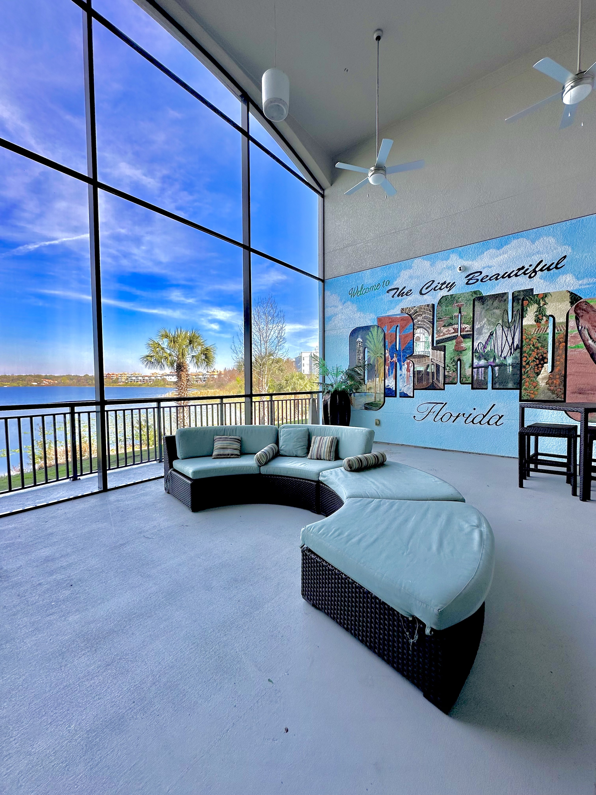

Pool Cage Re-Screening
Full replacement of damaged or worn screens to restore clear views and keep bugs and debris out of your pool enclosure.
Pool cage re-screening, patio screen repair, and aluminum enclosure restoration by Simple Screen Service.
Simple Screen Service works with property management companies, homeowners associations, and rental property owners across Davenport and Central Florida to provide reliable screen enclosure repair and maintenance services.
Our team understands the importance of maintaining safe and visually appealing outdoor spaces for residents and tenants. We provide fast estimates, professional installations, and consistent communication for every project.

Homeowners and property managers across Davenport trust Simple Screen Service for professional screen enclosure repairs and reliable service.
"Excellent work repairing our pool cage screens. The team was professional, fast, and the enclosure looks brand new again."
"We manage several rental properties and Simple Screen Service has been very reliable for screen repairs and maintenance work."
"Very clean installation and great communication. Highly recommend them for patio and pool enclosure screen repair."
Our technicians specialize in screen enclosure repair, pool cage re-screening, and aluminum structure restoration across Davenport and Central Florida communities.
We work with property management companies, HOAs, and rental property owners to provide fast and reliable screen repairs for residential communities and investment properties.
Our team uses durable screen materials and aluminum components designed to withstand Florida weather while maintaining a clean and professional appearance.
Every project is completed with attention to detail, ensuring pool cages and patio enclosures look clean, safe, and professionally finished.
We understand the importance of timely repairs for both homeowners and property managers. Our team provides quick estimates and efficient project completion.
Simple Screen Service proudly serves Davenport including Lake Nona, Dr Phillips, Winter Park, Conway, and nearby Central Florida communities.
Full replacement of damaged or worn screens to restore clear views and keep bugs and debris out of your pool enclosure.
Professional repair and replacement of patio and lanai screens to restore comfort and protection to your outdoor living space.
Repair and reinforcement of aluminum enclosure structures damaged by storms or long-term wear.
Fast screen repair after heavy winds or storm damage across the Orlando area.
Our screen repair services are available across Davenport including Lake Nona, Dr Phillips, College Park, Conway, Hunters Creek, Winter Park, and surrounding Central Florida communities.
Call (407) 405-5790 or contact Simple Screen Service today for a fast, professional quote for your screen enclosure repair project.
Request Free EstimateScreen repair costs depend on the size of the enclosure and the number of panels that need replacement. Simple Screen Service provides free estimates to homeowners and property managers across Davenport and Central Florida.
Most screen repair projects can be completed within one day. Larger pool cage re-screening projects may require additional time depending on the enclosure size and weather conditions.
Yes. Simple Screen Service works with property managers, homeowners associations, and rental property owners to provide reliable screen enclosure repair and maintenance services.
We repair pool cages, patio enclosures, lanai screens, aluminum frames, and storm-damaged screen panels across Davenport and nearby Central Florida communities.
Yes. We provide free estimates for homeowners and property managers. You can call or submit a request through our website to schedule an estimate.
We provide screen repair services across Davenport including Lake Nona, Dr Phillips, Winter Park, Conway, Hunters Creek, and surrounding Central Florida communities.